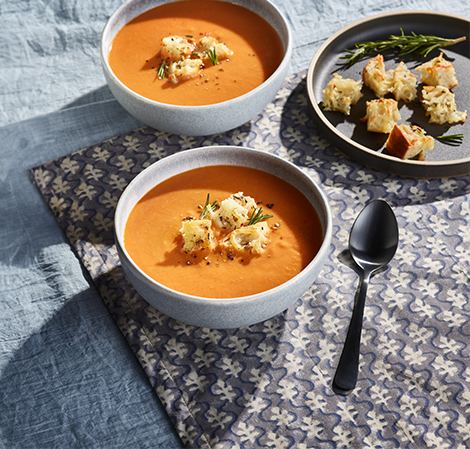

Tuscan Tomato White Bean Soup
Puréed to perfection, white beans lend creaminess to this soup, which is best enjoyed with homemade croutons.
Total Time: 1 Hour 4 Minutes | Yield: 8 servings | Difficulty: Intermediate
High Protein, High Fiber, Vegetarian
Submitted by: Vitamix
Ingredients
Soup:
- 3 Tablespoons (45 ml) extra virgin olive oil
- ½ small (60 g) onion, peeled, halved
- 5 (15 g) garlic cloves, peeled
- 1 teaspoon salt, optional
- 2 Tablespoons (30 ml) tomato paste
- 2 pound (900 g) Roma tomatoes
- 2 (850 g) cans white beans, drained, rinsed
- 4 cups (960 ml) vegetable broth
- 1 sprig fresh rosemary, picked
- ¼ teaspoon red pepper flakes
Crouton Garnish, optional:
- 4 (114 g) ciabatta bread, cubed
- ¼ cup (55 g) mozzarella cheese, shredded
- 1 Tablespoon fresh rosemary, chopped
Directions
- Heat 1 tablespoon of the oil in a large pot or Dutch oven over medium-high heat. Add the onion, garlic, and a pinch of salt. Cook, stirring occasionally, until the onion is softened, about 5 minutes. Add the tomato paste and cook for 1 minute. Add the tomatoes, beans, broth, rosemary, and red pepper flakes. Bring to a boil. Reduce the heat to medium and simmer for 20 minutes.
- Working in batches, carefully ladle the stovetop soup into the Vitamix container and secure the lid.
- Start the blender on its lowest speed, then increase to its highest speed. Blend for 20 seconds or until desired consistency is reached. Pour into a pot to keep warm. Repeat with leftover soup from the stovetop.
Nutrition
Serving Size
1 serving (387 g)
Calories
240
Total Fat
7g
Total Carbohydrate
33g
Dietary Fiber
11g
Sugars
7g
Protein
11g
Cholesterol
5mg
Sodium
500mg
Saturated Fat
1.5g